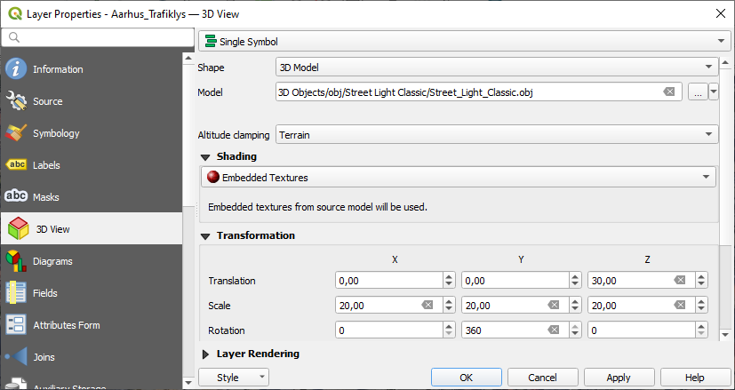

Flotte 3D-bygninger i QGIS og Blender
Peter Brodersen, Septima
QGIS-brugermøde, 29. april 2024
Flotte 3D-bygninger i QGIS og Blender
Peter Brodersen
- Udvikler hos Septima
- Aktiv i OpenStreetMap- og Wikipedia-miljøet
- … og på ingen måde 3D-grafiker!
Vi skal kigge på …
- Offentligt tilgængelige 3D-bygninger
- OpenStreetMap
- Google Photorealistic 3D Tiles API
- QGIS
- Blender
Hvad kan vi?
Eksempler
QGIS
Blender
Blender
QGIS
Blender
Offentligt tilgængelige 3D-bygninger
Offentligt tilgængelige 3D-bygninger
Google Photorealistic 3D Tiles
Opret projekt og API-nøgle
Googles dækning for Danmark
Andre 3D-modeller?
- OpenStreetMap
- Kommuner
- OpenData.dk
Søg Bymodel
- OpenData.dk
DWG/DXF er AutoCAD-formater. Understøttelsen er middelmådig

QGIS
QGIS
- Har understøttet 3D Maps i årevis
- Understøtter Scenes fra QGIS 3.34
- Alternativ Google Photorealistic 3D Tiles-adgang:
Cesium Ion-plugin
Data Source Manager: Scene
3D Map
Layer: 3D View

Export 3D Animation
Blender
Blender
- Open Source 3D-software (m.m.)
- Første udgave: 1994
- "Free Blender-kampagne" i juli 2002
(samme måned som første udgave af QGIS!)
- "Free Blender-kampagne" i juli 2002
- Download: www.blender.org
Blender: Filtyper
- Eget filformat
- 3D-formater (.obj, .stl)
- Vektor (.svg)
- AutoCAD (.dxf gennem frit add-on)
- Punktskyer (ved konvertering til mesh i MeshLab)
Blender: Blosm
- Gratis add-on til import af GIS-relaterede datasæt
- Google Maps' Photorealistic 3D Tiles
- OpenStreetMap-data (online + .osm)
- GPX tracks
Blender: Blosm
Blender: Blosm
Blender: Blosm
Blender: Blosm
Hvad vil I skabe?
Fred er at skabe
Nordal Grieg
Tak fordi I er til!
Mail: peter@septima.dk
Twitter: @peterbrodersen
Slides kan hentes på slides.findvej.dk (GitHub)
Spørgsmål?
Links
Hints
-
3D Map Tiles
- Husk at aktivere brugen af Map Tiles API
- QGIS, 3D Map
- Aktivér og sæt Project Full Extent, fx til Map Canvas Extent
- Blender, view distance
- Viewport: "View"-faneblad, over Blosm-faneblad. Øg "End" til fx 100000 m
- Kamera: Sæt Clip End til fx 100000 m